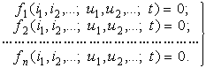
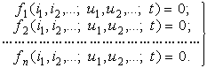

2.12.3.2. Метод фиксированных моментов времени
Решение системы функциональных уравнений (в предположении, что параметры
резистивных элементов не зависят от времени) ищут для ряда фиксированных
моментов времени t = tк, при
которых напряжения и токи ветвей цепи будут также фиксированными, что
равносильно замене источников переменного тока источниками постоянного тока,
напряжения и токи которых равны ординатам переменных напряжений и токов
соответ-ствующих источников при t = tк.
Таким образом, для фиксированного момента времени t = tк
будем иметь резистивную цепь постоянного тока и время не войдет в систему
уравнений, имеющую вид:

При невысоком порядке системы уравнений, используя метод исключения переменных Гаусса или формулы Крамера, можно найти ее корни для всех переменных.

При невысоком порядке системы уравнений, используя метод исключения переменных Гаусса или формулы Крамера, можно найти ее корни для всех переменных.
В общем случае решение системы уравнений, соответствующих каждому дискретному
времени, возможно только с помощью численных методов на ЭВМ.
В
частном случае
нелинейной резистивной цепи (рис 2.80), содержащей несколько линейных и один
нелинейный резистивный элемент R3,
источники постоянного напряжения и тока и один источник u1(t)
переменного сигнала), в принципе можно экспериментально получить напряжение
или ток в k-й ветви и построить входную u1(i1)
или выходную u6(i6)
характеристики цепи.
 |
Для этой цели подключают к полюсам источника u1(t) переменного сигнала регулируемый источник постоянного напряжения и измеряют токи (напряжения), например, на входе и выходе цепи при разных уровнях напряжения U1.
|
|
||